Each slide below is followed by the notes spoken alongside it, so the argument reads end to end without the talk. Click any slide for the full-resolution image, or take the whole deck as a PDF.
1elasmo_analyses: a Comprehensive Living Database of Elasmobranch Research for Literature Reviews, Research Geography, and Conservation Prioritisation
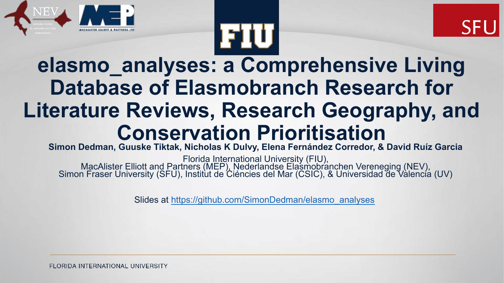
Speaker notes
No speaker notes for this slide.
2Publish > SharkRefs > Download > Rules > Extract
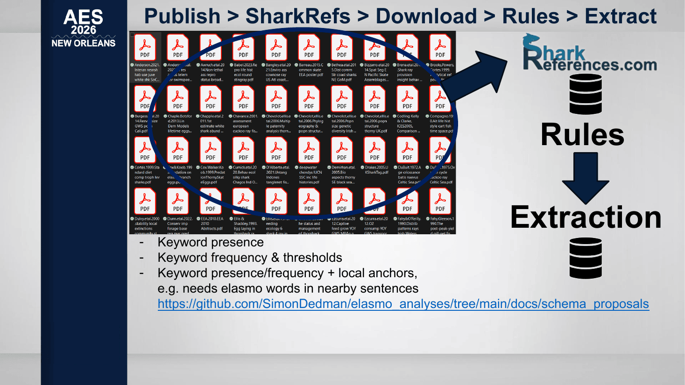
Speaker notes
We publish papers, books, and reports, which are indexed by SharkReferences.com; sign up for their newsletter and check your work is already indexed, and share it with them if it isn’t. They have over 30 thousand entries since the 1800s. We’ve downloaded most of them, and plan to get all of them. Instead of web of science or google scholar where a search for “rays” will give you a load of false positives for “xrays”, starting from sharkreferences means we’re picking from a pre-filtered clean list. Then we’ve designed a collection of text extraction rules: more than just the presence of keywords, we can set a threshold for the number of times those words need to occur before they ‘count’ as being a focus of the paper, we can require local anchors so for example ‘abundance’ needs to be mentioned near shark words, so we’re not capturing the abundance of boats or whatever.
3Keyword rules > 8 Schema Groups, 1,725 Columns
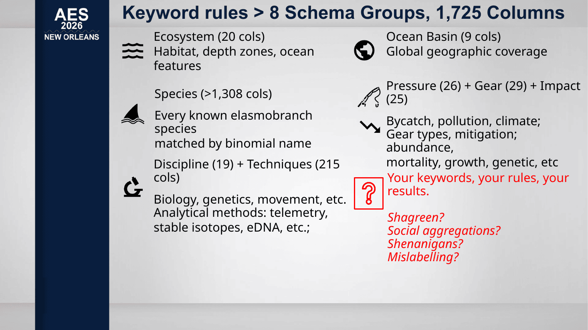
Speaker notes
These and various other keyword rules result in loads of database columns like:
ecosystem, habitat, depth; major & minor ocean basin; all chondrichthyan species & families; the pressures ON sharks by overfishing, climate change, etc; any fishing gear involved; the impacts TO chondrichthyan: populations, diversity, size; the discipline of the study; and the analytical techniques used. We know we haven’t captured everything, and we invite your participation. This database allows anyone to search any combination of these elements, so you can quickly see what’s been published, and what HASN’T, which can suggest study and funding priorities.
4Author & journal info enrichment
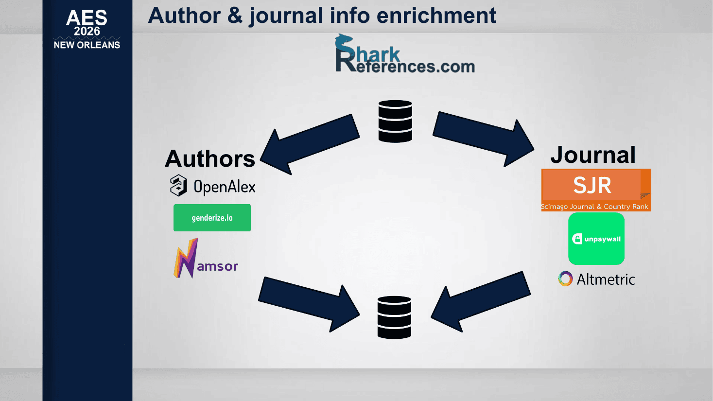
Speaker notes
We can also use the author and journal details to enrich the database with author publication history, institution details, gender, and ethnicity; and journal quality, open access status, and social media impacts.
51. Meta-paper: the full systematic review & pipeline
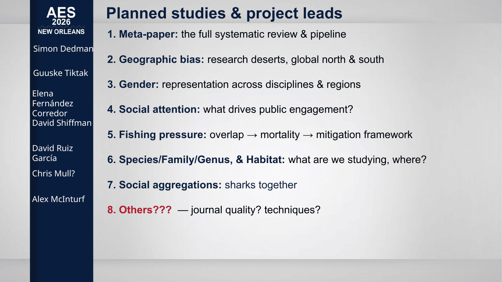
Speaker notes
We’ll write a paper about the methodology, and then the results in individual project papers: about geographic bias, gender, social media coverage, fishing pressure and impacts, species and habitats, and social aggregations.
6Species & Habitat Bias
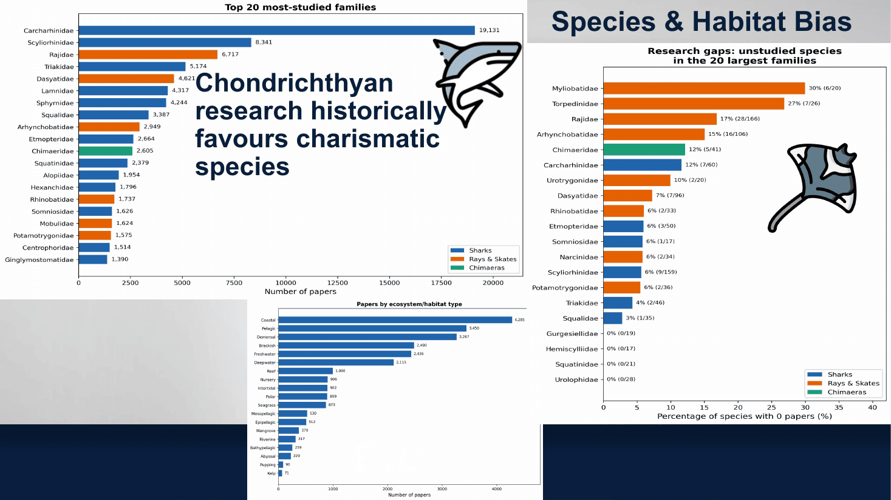
Speaker notes
There are research biases towards charismatic coastal shark species, while families of rays and chimaeras could have up to 30% of their species with NO published papers.
Other members of this community are doing great work exposing these biases in species & fisheries research… but do we know whether biases exist within who’s leading research and where?
We don’t have all the answers yet, but we’re adding to a discussion that is already evident at recent conferences and science in general.
7Global North dominates chondrichthyan research
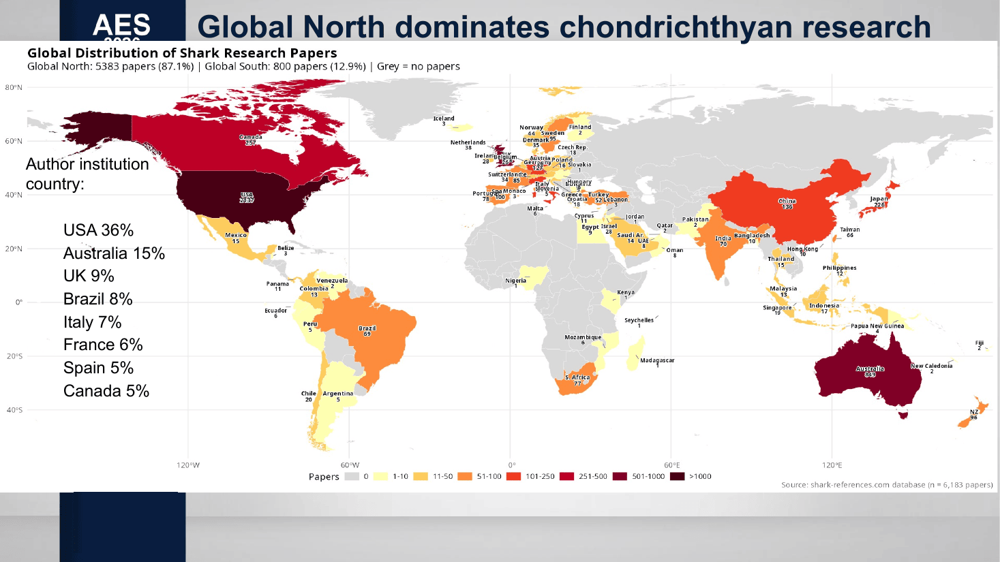
Speaker notes
We've mapped all the chondrichthyan studies and have seen that 87% are from the Global North, revealing MAJOR gaps in Asia, Africa and S America. This further validates that the issue isn't limited to just one journal, but affects a large proportion if not the majority of Chon. Science.
8More research effort in the North Atlantic & Med
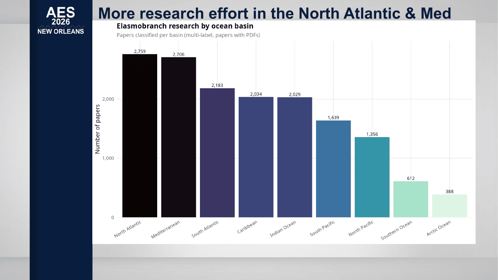
Speaker notes
So then when we look at WHERE the research is conducted, it’s mostly carried out in the North Atlantic and Med, which border North America and Europe. The gap looks smaller but the Global North researchers are often LEADING the work in the Global South
9Key collaborations between Global North
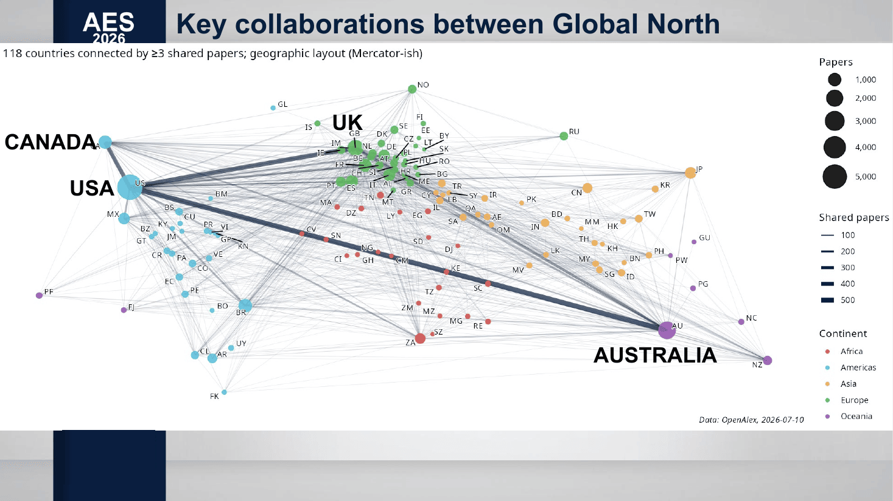
Speaker notes
Key collaborations are within the top Global North countries as we saw before, and this is concentrated among four countries.
Biodiversity is concentrated in the Global South, but the research is generated in the Global North.
Therefore, scientific attention more closely traces macroeconomic wealth than the latitudinal gradients of biodiversity it seeks to protect.
10Ethnic diversity of 1st authors is increasing!
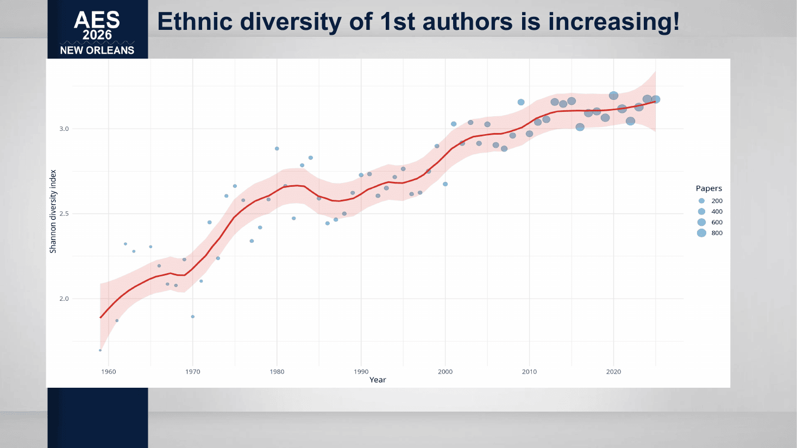
Speaker notes
We’ve seen a lot negative declines, but here we found a positive trend, that diversity of 1st author ethnicity is increasing!
At Sharks International, 84 countries were represented, evermore highlighting this increase, and giving hope for the future of elasmobranch science.
11Gender gap has closed!
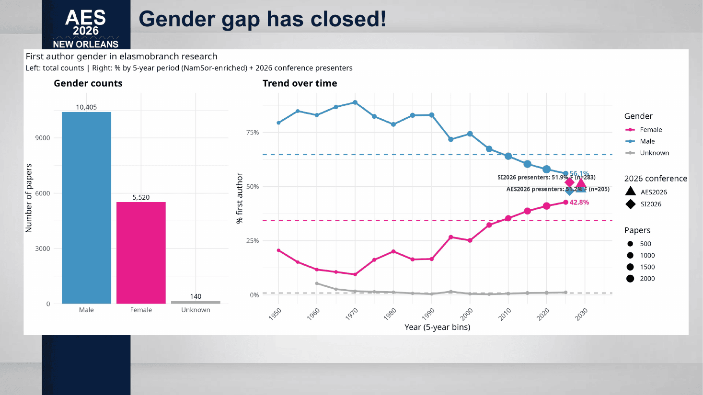
Speaker notes
In other good news, the gender gap is closing: at Sharks International and AES this year there have been more women than men, at 51.9 and 51.2% respectively.
12Open Access has increased: win for data transparency and global reach… But!
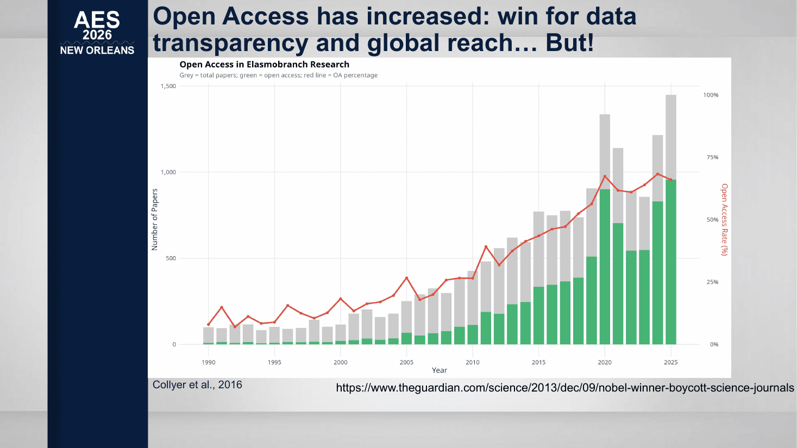
Speaker notes
We also looked at open access journal publication rate within Chondrichthyan research and found that open access rates are climbing. This is a positive step that allows governments, NGO’s and local researchers to read and use the latest science for free. This enables the sharing of conservation data that can reach the people on the ground, such as policy makers.
But, there are inherit problems within open access: Free to read doesn’t necessarily mean free to publish. Someone still has to pay the fees, and this creates a bias towards institutions that can afford these high fees, which may exclude local governments, institutions, and researchers from leading the conversation, even when the study is in their own waters.
13Early results! Biases & challenges remain
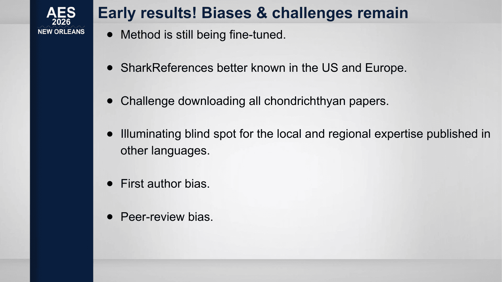
Speaker notes
We recognise that there are limitations within this work. This is our honest attempt at indexing all chondrichthyan research, and the method is still a work in progress. We know there’s work to be done.
● SharksReferences is a great tool, but it's better known in Europe and the US, and therefore may underrepresent regional research from Asia, Africa, and Latin America.
● Local journals and grey literature from the Global South, published in other languages might be missing from our count - Improving our coverage is our top priority… with YOUR help.
14Improvements, but gap remains!
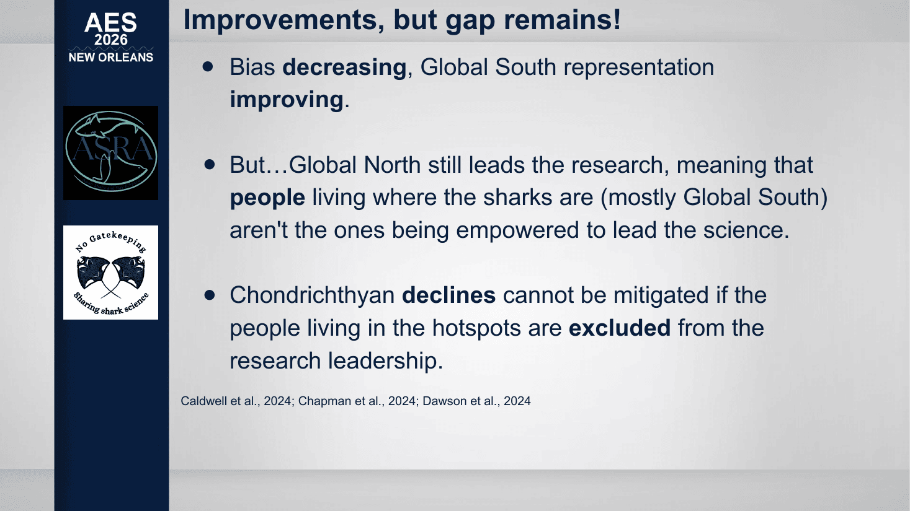
Speaker notes
So across chondrichthyan research, the bias is decreasing, and there is more representation of Global South studies LED by Global South authors.
However, there is still work to be done, as the Global North leads most of the research, meaning people and communities living where the chondrichthyans are and where they are most threatened and needed for sustenance and livelihoods, aren't the ones leading the science. Chondrichthyan declines cannot be mitigated if the people LIVING and BREATHING these lives, are excluded from the research leadership. So again, it’s important to consider your role in research, and how you can best contribute, whilst ensuring all voices are included.
With the recent launch of ASRA – the Asian shark and ray alliance – we are seeing increased leadership AND collaboration in the Global South.
15Validate your data
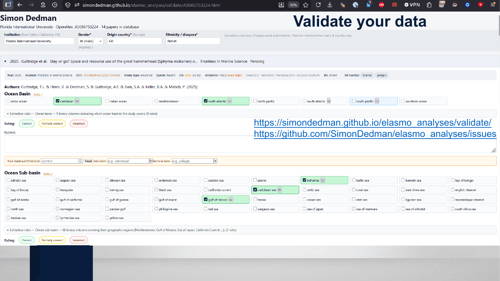
Speaker notes
If you’re a coauthor on a paper indexed by sharkreferences.com you should have your own validation page on our GitHub, which lists all of your studies, and what the extraction results are for each of your papers: please go there and check: if your papers aren’t there, tell sharkreferences, and if there are any mistakes in the extractions, you can correct them to help improve the extraction rules for everyone and get updates. You can also create Github issues for new extraction types, rules, and study proposals, like ecological role.
16What's next for elasmo_analyses?
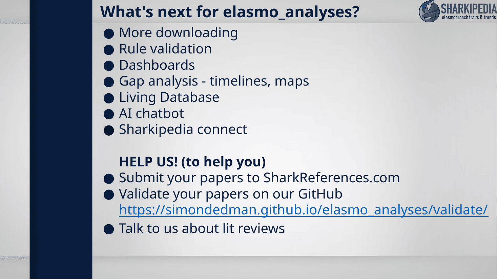
Speaker notes
We’re adding papers and doing fresh rounds of rules improvements and validations which are seeing extraction accuracy increase. Dashboards, gap analyses, and living lit reviews are coming, plus an AI model where you can talk with a shark knowledge oracle. With our friends at Sharkipedia we’re discussing how our projects can connect, to enrich both of them.
If YOU’VE conducted a chondrichthyan-specific lit review please let us know because that could help us validate the extraction process and improve things for everyone. And if you’re ABOUT to do a lit review, maybe you could use this and save time.
17Thank You
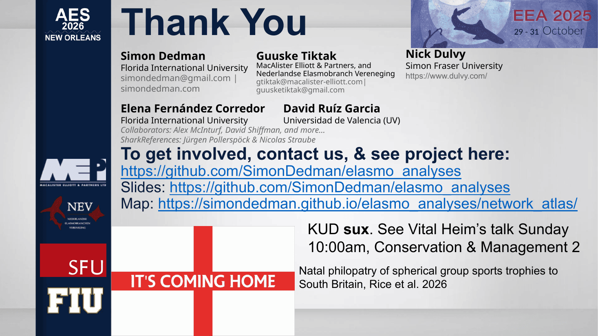
Speaker notes
Thanks to Irena Kingma and the Dutch elasmo team for funding Guuske Tiktak and I to run the data panel at EEA 2025 which started this project. This project is powered by love and obsession and funded by nobody, so if you like the idea of this existing and have any control of grant funding, please come talk to me, ditto if you want to be involved, and/or to ground-truth your lit review. Unrelatedly please see Vital’s talk on Sunday at 10 and stop using KUD to determine space use: let’s make 2026 the year we stop using stone tools. Thanks for your time. It’s coming home. [network map, LLM frontend]